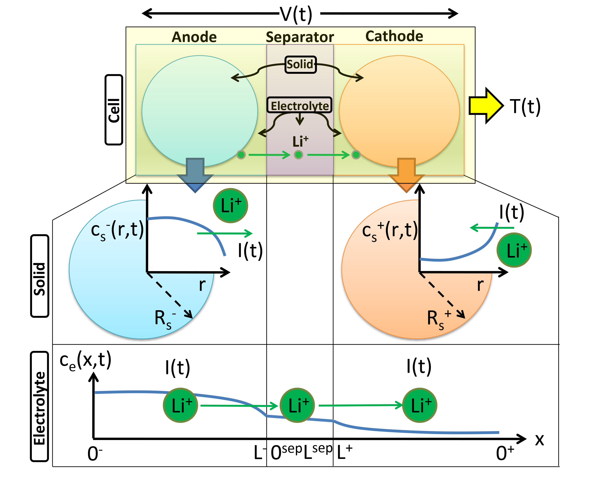

SPMeT
Single Particle Model with Electrolyte and Temperature: An Electrochemical-Thermal Battery model

Originally published November 5, 2016 by Professor Scott Moura
Energy, Controls, and Applications Lab (eCAL)
University of California, Berkeley
http://ecal.berkeley.edu/
Executive Summary
This repository provides Matlab code for the Single Particle Model with Electrolyte (SPMe). A diagram of the SPMe is below. The SPMe can be run and edited from filename spme.m. Future versions will include the Single Particle Model with Electrolyte and Temperature (SPMeT) dynamics. The SPMe model code is based upon the equations in the publication below.
"Battery State Estimation for a Single Particle Model with Electrolyte Dynamics"
by S. J. Moura, F. Bribiesca Argomedo, R. Klein, A. Mirtabatabaei, M. Krstic
IEEE Transactions on Control System Technology, to appear
DOI: 10.1109/TCST.2016.2571663

Features
Specifically, the code models the following dynamics:
- Solid-phase lithium diffusion
- Electrolyte-phase lithium diffusion
- Assumes isothermal operation (SPMe only)
- Surface and bulk concentrations of lithium in solid-phase single particles
- Voltage
Detailed Features
- Concentration dependent exchange current density
- Concentration dependent electrolyte diffusivity
- Concentration dependent electrolyte conductivity
- Concentration dependent electrolyte activity coefficient function
Features not included
- Temperature dynamics
- Temperature dependent electrochemical parameters
- Concentration dependent solid phase diffusivity
- Multiple particle sizes / chemistries
- Aging mechanisms
Inputs
The SPMe requires the following inputs:
-
Parameter file: A parameter file in directory
/paramwhich provides model parameter values that correspond to a particular chemistry. For example, params_LCO.m provides model parameter values for a graphite anode/lithium cobalt oxide cathode. -
Input current trajectory: A definition or input file in directory
/input-datathat provides a time series of electric current applied to the battery cell model in terms of A/m^2. -
Initial conditions: Initial conditions values for the state variables. These include:
- Voltage
V0: Initial voltage. VariableV0and the moles of solid phase lithiump.n_Li_sin the parameter structure together are used to compute initial conditions for solid phase lithiumcsn0andcsp0 - Electrolyte concentration
ce0: Initial concentration of lithium ions in the electrolyte, e.g.p.c_efrom the parameter structure, in units of [mol/m^3] - Temperature
T0: Initial temperature.
- Voltage
Outputs
The SPMe simulates the following outputs:
-
Bulk State-of-Charge
SOC_n,SOC_p: Bulk SOC in anode and cathode, respectively.SOC_nis the typical SOC value reported in any battery-powered device. -
Voltage
V: Terminal voltage of battery with SPMe. -
SPM Voltage
V_spm: Terminal voltage of battey predicted with SPM model (i.e. without electrolyte subsystem). -
Solid-phase Lithium concentrations
c_nandc_p: Concentration of lithium in the solid phase of the anode and cathode, respectively, as a function of time step1:NTand radial distancer_vec. Units are [mol/m^3]. -
Surface concentrations of Lithium
c_ss_nandc_ss_p: Concentration of lithium at SURFACE of solid phase particles in the anode and cathode, respectively, as a function of time step1:NT. Units are [mol/m^3]. -
Electrolyte-phase Lithium concentrations
c_e: Concentration of lithium in the electrolyte phase, as a function of time step1:NTand distance across cell sandwichx_vec_spme. Units are [mol/m^3].
Visualizations
To visualize the SPMe simulation results, run the following code:
- plot_spme.m: Generates one static figure with (i) current, (ii) surface concentrations, and (iii) voltage.
- animate_spme.m: Generates an animated figure with (i) solid-phase lithium concentrations, (ii) electrolyte phase concentrations, and (iii) voltage.
Numerical Method Parameters
The solid and electrolyte phase PDEs are solved with the central difference method and second-order accurate boundary conditions to ensure conservative solutions (i.e. conservation of matter). The accuracy / simulation speed can be adjusted by changing the following parameters.
-
p.delta_t: Time step in [sec]. Default: 1 sec -
p.Nr: Number of nodes in finite discretization of single particles. Default: 30 -
p.Nxn: Number of nodes along x-coordinate in Anode. Default: 10 -
p.Nxs: Number of nodes along x-coordinate in Separator. Default: 5 -
p.Nxp: Number of nodes along x-coordinate in Cathode. Default: 10